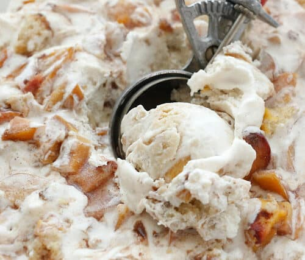

Peach Cobbler Ice cream

A creamy and rich ice cream with all the flavors of Peach Cobbler.
Fresh peaches and crumbled pie crust coated with cinnamon and brown sugar.
Ingredients
- 1 refrigerated pie crust
- 1 tablespoon butter, melted
- 1 tablespoon heaping brown sugar
- 1 teaspoon ground cinnamon
- 1 1/2 cups half-and-half
- 1/2 cup packed brown sugar
- 1/2 cup white sugar
- 1/8 teaspoon salt
- 2 eggs, beaten
- 1 cup heavy whipping cream
- 1 teaspoon vanilla extract
- 1/4 teaspoon almond extract
- 2 heaping cups chopped peaches
Instrucctions
- Preheat oven to 400 degrees. Unroll pie crust on a baking sheet and
drizzle with butter. Sprinkle with 1 tablespoon brown sugar and cinnamon.
Bake for 10 minutes. Cut into strips and let cool.
- In a saucepan over medium-low heat, combine the half and half, brown
sugar, white sugar, and salt. Stir until sugar dissolves, about 5 minutes.
- Take saucepan off heat. Place eggs in a medium bowl. While whisking,
gradually (to not curdle the eggs) add about half the sugar/half-and-half
mixture to the eggs.
- Pour egg mixture into saucepan with the half and half that remained
in the saucepan.
- Stir in cream.
- Cook over medium heat, stirring frequently, until mixture thickens and
coats the back of a spoon. About 5 to 10 minutes.
- Take saucepan off heat and stir in vanilla extract and almond extract.
Pour mixture through a fine-meshed sieve into a bowl and let cool
to room temperature.
- Place 1 cup of peaches in food processor and process until smooth.
- Add processed peaches and chopped peaches to cream mixture.
- Pour into an ice cream maker and freeze according to manufacturers
directions.
- Just before turning ice cream maker off, add about 1/2 the pie crust
pieces, crumbling them into the ice cream.
- If ice cream is not thick enough for your liking,
place in freezer for 1 hour.
- Serve with remaining pie crust pieces.
Back